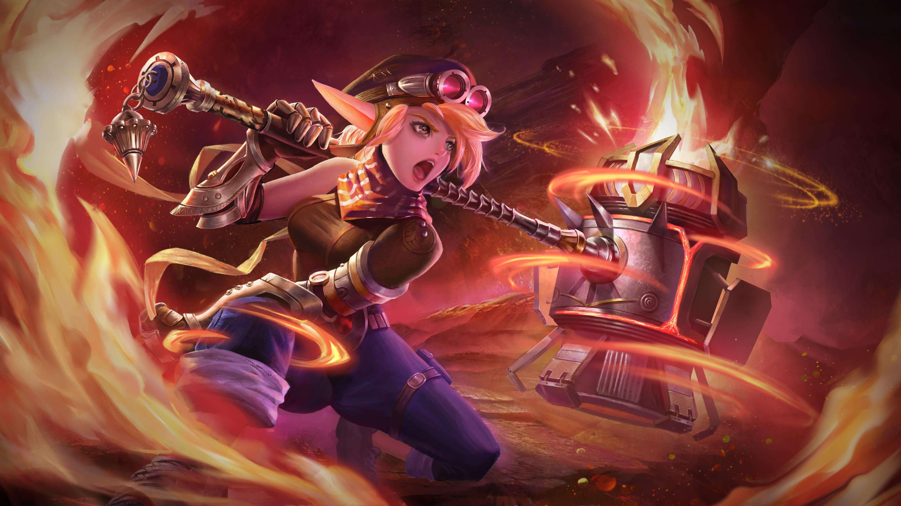

Лолита Mobile Legends - это герой — танк, который так же может быть героем поддержки. Данный герой часто оценивается игроками как лучший танк в игре. Основная задача Лолиты это танкование урона.Если Лолита не получает урон в течении 5 сек., Энергетическое ядро Ноумена даст щит, который впитывает 300(+40*Уровень Героя) единиц урона, длится 20 сек. Ближайшие союзники Лолиты могут получить щиты, когда приблизятся к ней.Лолита устремляется в указанном направлении. В следующие 4 сек ее базовая атака переместит ее к вражеской цели, нанося физический урон, равный 200(+100% общий физической атаки) плюс 7,5% максимальных ОЗ цели. В это время цель будет оглушена на 0,8 сек. Наносят 200(+100% общей физической атаки) плюс 50% максимальных ОЗ цели миньонам Перезарядка — 10.0 Стоимость — 70 маны Пассивный
Дариус Mobile Legends это хороший боец, который имеет вместо маны ресурс Гнева. Он отлично показывает себя в боях и может быть достаточно маневренным героем.Когда ярость Дариуса достигает 50% он усилит Взрывной удар и Призрачный шаг. После каждой 2 базовой атаки, Дариус применит Круговой Удар, нанося (+140% общей физической атаки) единиц физического урона врагам в радиусе и восстанавливая ОЗ в соответствии с нанесенным уроном (у Кругового Удара нет эффекта АТК). Каждый раз ударяя по вражескому герою, время восстановления Взрывного Удара и Призрачного Шага сокращается на 1 сек. Дариус применяет Взрывной Удар в определенном направлении, нанося 200 (+60% общей физической атаки) единиц физического урона врагам на пути и замедляя их на 25%. Длится 1.5 сек. (Урон по одной и той же цели снижается). Усиление Бездны: Взрывной Удар получает большой радиус, нанося 140% от базового урона и вдвойне замедляя врага. Перезарядка — 5.0 Пассивный
Кадита Mobile Legends - это маг, управляющий волнами океана. Она способна наносить мощный урон своим противникам призывая океанические цунами.Каждые 30 сек. Кадита получает Благословение от Могущественного Океана. В течении 4 сек. после получения урона, она восстанавливает 65% ОЗ потерянных во время использования навыка.Кадита становится русалкой и призывает океанскую волну. Затем она седлает волну, нанося 265 (+90% общей магической силы) единиц магического урона и замедляет врагов на 30%. Она получает иммунитет к любым навыкам массового контроля и сокращает 70% урона, полученного, когда она внутри волны. Повторное использование: Она немедленно слезает с волны, тогда волна сама будет двигаться в текущем направлении. Эта способность игнорирует препятствия. Перезарядка — 9.0 Стоимость — 80 маны Пассивный